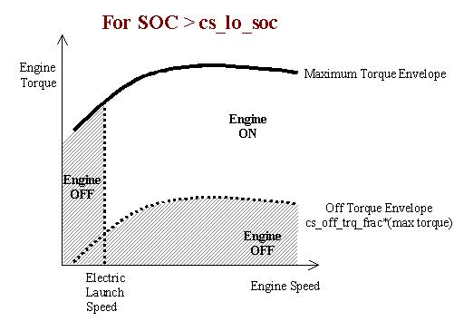
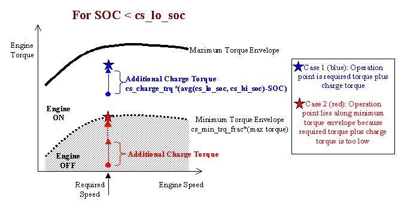

The parallel electric assist control strategy uses the motor for additional power when needed by the vehicle and maintains charge in the batteries.
The parallel assist strategy can use the electric motor in a variety of ways:
There are six variables that determine the limits of the control strategy. Their influence on the engine operation are shown in the schematics below, and they are described in the following table.


Parallel Control Strategy Tips
| Variable | Description |
| cs_hi_soc | highest desired battery state of charge |
| cs_lo_soc | lowest desired battery state of charge |
| cs_electric_launch_spd | vehicle speed below which vehicle operates as a Zero Emissions Vehicle |
| cs_off_trq_frac | cs_off_trq_frac*(torque capability of engine at current speed) = minimum torque threshold; when commanded at a lower torque, the engine will shut off if SOC > cs_lo_soc |
| cs_min_trq_frac | cs_min_trq_frac*(torque capability of engine at current speed) = minimum torque threshold; when commanded at a lower torque, the engine will operate at the threshold torque and the motor acts as a generator if the SOC < cs_lo_soc |
| cs_charge_trq | cs_charge_trq*((cs_lo_soc+cs_hi_soc)/2-SOC) = an accessory like torque loading on the engine to recharge the battery pack whenever the engine is on. |
The “Off torque envelope” and the “Minimum torque envelope” are specified separately. Since transfering energy into and out of the battery incurs losses, it may be preferable to set the charging torque at a higher level than the engine off torque. This could allow the overall efficiency of charging and discharging the battery to be higher than it would be at a lower torque, where the engine efficiency would be lower.
Implementation
Parallel block diagram
The implementation of the parallel control stategy is found in two main blocks: the electric assist control strategy block and the vehicle controls block.
Main Block Diagram
Electric assist control strategy block diagram
The torque and speed load due to driving conditions is presented to the engine through the clutch. The energy management strategy determines how the torques from the engine and motor will combine to produce the required torque while maintaining charge in the battery.
Electric Assist Block Diagram
Vehicle controls/Engine On block diagram
The state of the engine (on or off) is determined by the following block diagram.
Engine On Block Diagram
Last Revised: 7/20/00:AB